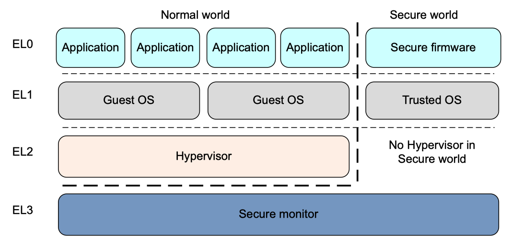
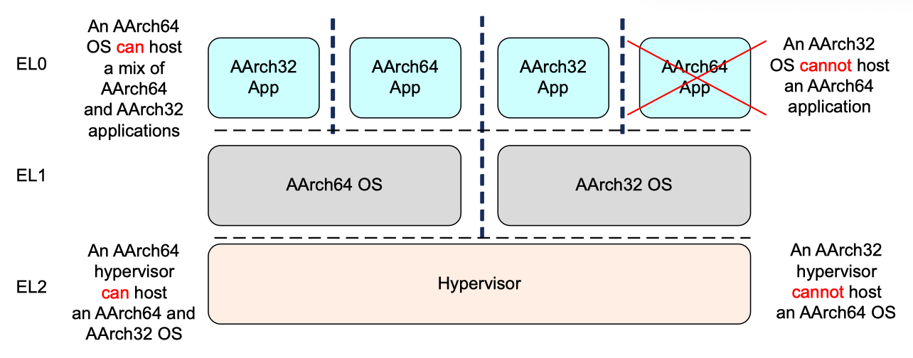
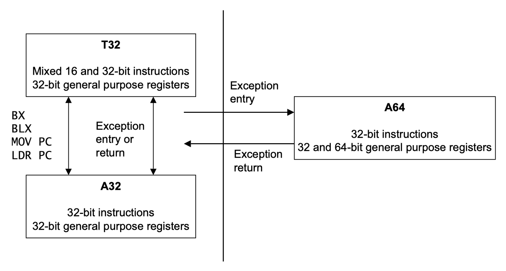

ARM64 Execution States
The AArch64 processor provides two major modes of operation, referred to as execution states. They are 32-bit AArch32 state, and 64-bit AArch64 state.
Execution states#
Assembly challange - Raspberry Pi Forums
ARM Cortex-A Series Programmer's Guide for ARMv8-A | 3.1 Execution states
The ARMv8 architecture defines two Execution States, AArch64 and AArch32. Each state is used to describe execution using 64-bit wide general-purpose registers or 32-bit wide general-purpose registers, respectively. While ARMv8 AArch32 retains the ARMv7 definitions of privilege, in AArch64, privilege level is determined by the Exception level. Therefore, execution at ELn corresponds to privilege PLn.
When in AArch64 state, the processor executes the A64 instruction set. When in AArch32 state, the processor can execute either the A32 (called ARM in earlier versions of the architecture) or the T32 (Thumb) instruction set.
The following diagrams show the organization of the Exception levels in AArch64 and AArch32.

Changing execution state#
Arm Compiler armasm User Guide | 3.4 Changing between AArch64 and AArch32 states
The processor must be in the correct execution state for the instructions it is executing.
A processor that is executing A64 instructions is operating in AArch64 state. In this state, the instructions can access both the 64-bit and 32-bit registers.
A processor that is executing A32 or T32 instructions is operating in AArch32 state. In this state, the instructions can only access the 32-bit registers, and not the 64-bit registers.
A processor based on the Arm ® v8 architecture can run applications built for AArch32 and AArch64 states but a change between AArch32 and AArch64 states can only happen at exception boundaries.
Arm Compiler toolchain builds images for either the AArch32 state or AArch64 state. Therefore, an image built with Arm Compiler toolchain can either contain only A32 and T32 instructions or only A64 instructions.
A processor can only execute instructions from the instruction set that matches its current execution state. A processor in AArch32 state cannot execute A64 instructions, and a processor in AArch64 state cannot execute A32 or T32 instructions. You must ensure that the processor never receives instructions from the wrong instruction set for the current execution state.
ARM Cortex-A Series Programmer's Guide for ARMv8-A | 3.3 Changing execution state
There are times when you must change the execution state of your system. This could be, for example, if you are running a 64-bit operating system, and want to run a 32-bit application at EL0. To do this, the system must change to AArch32.
When the application has completed or execution returns to the OS, the system can switch back to AArch64. Figure 3-7 shows that you cannot do it the other way around. An AArch32 operating system cannot host a 64-bit application.

To change between execution states at the same Exception level, you have to switch to a higher Exception level then return to the original Exception level. For example, you might have 32-bit and 64-bit applications running under a 64-bit OS. In this case, the 32-bit application can execute and generate a Supervisor Call (SVC) instruction, or receive an interrupt, causing a switch to EL1 and AArch64. (See Exception handling instructions.) The OS can then do a task switch and return to EL0 in AArch64. Practically speaking, this means that you cannot have a mixed 32-bit and 64-bit application, because there is no direct way of calling between them.
You can only change execution state by changing Exception level.
- Taking an exception might change from AArch32 to AArch64, and returning from an exception may change from AArch64 to AArch32.
- Code at
EL3cannot take an exception to a higher exception level, so cannot change execution state, except by going through a reset.
Interworking between the two states is therefore performed at the level of the Secure monitor, hypervisor or operating system. A hypervisor or operating system executing in AArch64 state can support AArch32 operation at lower privilege levels. This means that an OS running in AArch64 can host both AArch32 and AArch64 applications. Similarly, an AArch64 hypervisor can host both AArch32 and AArch64 guest operating systems. However, a 32-bit operating system cannot host a 64-bit application and a 32-bit hypervisor cannot host a 64-bit guest operating system.
For the highest implemented Exception level (EL3 on the Cortex-A53 and Cortex-A57 processors), which execution state to use for each Exception level when taking an exception is fixed. The Exception level can only be changed by resetting the processor. For EL2 and EL1, it is controlled by the System registers.
ARM Cortex-A Series Programmer's Guide for ARMv8-A | 5.3 Switching between the instruction sets
It is not possible to use code from the two execution states within a single application. There is no interworking between A64 and A32 or T32 instruction sets in ARMv8 as there is between A32 and T32 instruction sets. Code written in A64 for the ARMv8 processors cannot run on ARMv7 Cortex-A series processors. However, code written for ARMv7-A processors can run on ARMv8 processors in the AArch32 execution state. This is summarized in Figure 5-1.

references#
32 bit assembly code in aarch64 - ODROID
32 Bit executables in AARCH64 system - ODROID
How can I assembly and run arm32 code in my aarch64 phone using termux? : r/termux
linux - Running 32-bit ARM binary on aarch64 not working despite CONFIG_COMPAT - Stack Overflow
How to run 32-bit (armhf) binaries on 64-bit (arm64) Debian OS on Raspberry Pi? - Unix & Linux Stack Exchange
How to switch from default aarch32 to aarch64? - Arm Community
How Linux arm64 switch between AArch32 and AArch64 - Stack Overflow